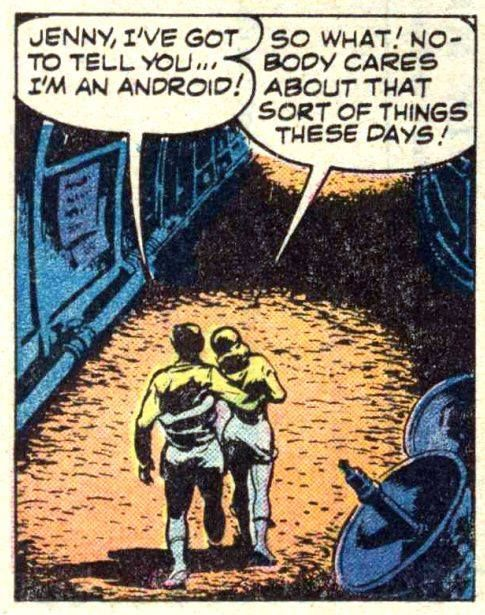

Here, I return back to my narrative. The reader is reminded that I was “off-world” after entering the dimensional transport portal. There, I underwent some kind of extraterrestrial EBP reconstructive “medical” procedure while lying on a table. I got up and was instructed to leave the area. I did so and entered a long red lit “tunnel” area.
Introduction
“To my way of thinking, there is every bit as much evidence for the existence of UFOs as there is for the existence of God; probably far more. At least in the case of UFOs there have been countless taped and filmed and, by the way, unexplained sightings from all over the world, along with documented radar evidence seen by experienced military and civilian radar operators.” ― George Carlin, When Will Jesus Bring the Pork Chops?
In short order, I walked through the field and left the red lit chamber. It was dissimilar to when I entered it. This time the ringing in my ears was far softer, and much quieter. It wasn’t so fierce, and to me it appeared as if I just simply walked through a foot thick layer of fog. Indeed, the transition from the medical facility to the naval base was nearly instantaneous.
Comparatively, it felt like walking through a thick wall of water. That is actually the best way that I can explain it. It was exactly like walking through an increasingly dense curtain of water. As I passed through the gaseous and vaporous “waterfall”, I suddenly found myself back on the base. I felt wet. (The feeling disappeared about three seconds later.)
I do remember being startled at how “wet” I felt. Then I “snapped out of it” and walked up to the meet the Commander as he walked towards me.
When I exited the field, it was 5 days later and I was leaving from a different portal in the ELF facility. I entered the same room, but it was now dim and empty, and only the Commander was waiting for me. As I exited the portal I saw him clearly at the end of the hangar. And, as I exited, he walked up to me. He had been expecting me. He waited for me at that specific date, and specific time.
Only some of the lights in the ceiling were on, as opposed to when I left the base. At that time most of the lights were on. At this time only about 1/3 to ¼ of the lights were on. It was dim, but not completely dark.
I walked straight, but found that I exited at a 90 degree angle to where I entered. As far as I can tell, my point of arrival was at the exact spot where I entered the field five days earlier. The building was dim, empty and quiet. As the Commander walked up to me, his footsteps echoed in the large empty building. No one else was there. It felt like the end of the day when everyone had went home. The building was deserted and empty. I continued walking towards him, and we met in the middle of the hangar.
I forgot all protocol and did not salute. (As far as I can recall.) This was a terrible breach of everything that I had been taught, but I was in quite a state of shock. (As was understandable.) He didn’t seem to mind at all and motioned for us to go out through a side door to our right. I seem to recall that he suggested that we go through the door. We walked in silence together. He was to my left and opened the door for me by pressing the center door brace. Then held it open for me by standing to my right side and holding the door open.
We exited the empty warehouse by leaving through a side door that took us to a small set of cement steps set next to the rear of the building. We went down the steps and walked to the shady parking lot in front of us. There were only two vehicles left there. We entered the one that the Commander was driving. It was, I believe, the same plain subcompact car that he drove us to the facility earlier.
Chatting in the Car
“I thought any chance I had of space travel would be military or government-controlled.” -David Mackay
I sat in the front next to the Commander. We drove out of the parking lot, and went out of the gated ELF area. It was late afternoon, and the shade underneath the trees was dark and deep. It was quiet, and everyone had gone home. It was a Friday (!), and as such, the base was mostly deserted except for the barracks where the AOC’s lived. We passed though the ELF gate and turned down the road. We rode down the shady lanes in quiet contemplation.
When we were on the road the Commander asked me what I thought about all that I had gone through. I told him that it was all overwhelming. I actually said “…it’s pretty overwhelming…”. I probably should have said more, but I was actually worn out and in a bit of shock.
We drove in silence for most of the trip. I felt halcyon and cool. He told me that he was doing to drop me off at the canteen and for me to get something to eat. Then, after eating, I was to go to my barracks and get some sleep. He told me that he knew that it seemed fantastic and amazing, but that I would get used to it all soon enough. (Paraphrased quote.) I told him that I thought that I might need a few days to sort everything out that happened.
I asked him what will happen next. He said not to worry about that at all. He stated that things will sort themselves out and I will know exactly what to do. (Also paraphrased.)
Then he told me something that was shocking to me. He told me that after today, I won’t remember anything that happened. I must have been really disrespectful, but I think I said, “Awe…, shit.” I quickly turned my head and looked out the window in deep thought.
“At various points in our lives, or on a quest, and for reasons that often remain obscure; we are driven to make decisions which prove with hindsight to be loaded with meaning. ” ― Swami Satchidananda, The Yoga Sutras
Yippee-Ki-Yay!
He pulled the car up to the canteen, we sat in the car for a few minutes. He told me to go inside and get something to eat. He said that my class had already eaten, so when I am done eating, just return to the barracks on my own and join them. He told me to remember everything that we had talked about. Especially to remember “Yippee-Ki-Yay!”.
I got out and walked a few paces and then turned around to look at him. He sat in the car and was watching me go into the building intently. I smiled, turned around and went in. I knew he watched me walk into the canteen and then he drove off.
Victoria Lasseter: Cherry Progressive, listen. Mandelbrot set is in motion. Echo Choir has been breached. Mike Howell: Is that a lyric from something? -Dialog representative of trigger phrase from the movie “American Ultra”.
In hindsight, this particular verbiage kept on coming up. But it did not come up in the way that you would think. Instead, it appeared periodically due to the popularity of the “Die Hard” series of movies.
Die Hard is a 1988 American action film directed by John McTiernan and written by Steven E. de Souza and Jeb Stuart, based on the 1979 novel Nothing Lasts Forever by Roderick Thorp. Die Hard follows off-duty New York City Police Department officer John McClane (Bruce Willis) as he takes on a group of highly organized criminals led by Hans Gruber (Alan Rickman), who perform a heist in a Los Angeles skyscraper under the guise of a terrorist attack using hostages, including McClane's wife Holly (Bonnie Bedelia), to keep the police at bay.
Here’s a comment written by Catullus on Dec 25, 2017 6:21 PM. It is in the comments section of the article titled “What’s The Greatest Christmas Movie Of All Time?”. In it, the commenter states that the movie “Die Hard” is the best movie (of all time) to watch during Christmas.
“Die Hard. Please. Women hate it. It’s about a regular guy caught up in something extraordinary. Helped by other regular people. Using his wits. Plus it’s full of lazy, fat, stupid government bureaucrats fucking it up even further. And then he gets back with his wife who he’s having marital problems with while they balance success in their lives. It’s not magic and dancing and bullshit” -Catullus Dec 25, 2017 6:21 PM
Every time I would hear this phrase, or even the mere reference to it, I would feel somewhat stronger inside. I would remember who I was and what my overall purpose was. Maybe this was true for all Americans, but I had a certain attachment to the character whom Bruce Willis played in that movie; John McClane.
I am sure that the actor had no idea that his role was connected to our programming. I also didn’t think he knew how his role was used to affect the emotional states of the men whom were entrusted to be the “real” John McClane in the “real” world. Never the less, all of us in the program, felt connected to this character and (every-man) hero.
In fact, aside from the popular series of movies, I never heard that phrase ever used. Even when it was used in the movies it seemed forced and uncomfortable. What was the purpose of all the elements surrounding it? It was and is a big mystery to me.
This is an interesting point I would like to devote a moment to ponder. The government has ties to all the media outlets. These ties are familial, friends, relationships, social, and in a number of cases, formal. Additionally, for reasons that are rather complex, the American media is dominated by a liberal (as opposed to conservative) bias. They have connections to big business, banks, and every single media outlet. They are able to use these connections to place phrases, words, sentences, subjects and concepts to the unaware American populace. To most, they are banal and insignificant. But they all, every single one of them has a meaning and a purpose.
While the movie “Die Hard” ended up being quite popular, the key ionic phrase that he uttered did not. And that is perhaps the story within this story. The message of the lone hero who fights a greatly powerful foe against all odds; the simple “every-man” hero is the story of our roles. And while the movie portrayal was popular, the messages left inside the movie were missed and forgotten by everyone except those “in the know”. For us, the message was clear. The iconic phase was for us; the real “designated heroes” of this adventure.
Although how I was a “hero “is beyond me. There is nothing especially great or unique about me, aside from those probes in my head. I am just an average man, doing an average job, with a wife, and then retired from it all. There was nothing heroic about anything in my life; NOTHING. Nothing at all. Honestly, I'm just some smuck that was in the right place at the right time, and nothing more.
The Canteen
I entered the canteen.
I immediately noticed that the other AOCs were wearing a different uniform than I was. I was dressed in the khaki uniform that I wore on Monday, and they were dressed in the khaki uniform for Friday. To an outside observer this was meaningless, but to us it was important. They wore a Service Khaki uniform with a peaked cap, while I was wearing a Service Khaki uniform with a garrison cap. It startled me, but I just ignored it and continued into the canteen.
A Peaked Cap. A military style cap with black visor, rigid standing front, flaring circular rim and black cap band worn with detachable khaki cover. Fabric match of cap cover and uniform is required. When wearing an all-weather coat, a clear plastic combination cap rain cover may be worn. A Side Cap. A side cap is a foldable military cap with straight sides and a creased or hollow crown sloping to the back where it is parted. It is known as a garrison cap (in the United States), a wedge cap (in Canada), or officially field service cap (in the United Kingdom and Commonwealth countries), but it is more generally known as the side cap. A convenient feature of this cap is that when the owner is indoors and no coat-hook is available on which to hang it, then it can be easily stored (by folding it over the belt or, unofficially, by tucking it under an epaulette).
Outside the canteen, on the porch, was a rack where one would place their hats or raincoats before entering. In this case, I noticed that the shelves had peaked hats. This was quite unlike what I was wearing at the time.
Like an automation, I went and obtained a tray of food and then sat down apart from other classes that were eating. I went to the closest empty table and sat apart from everyone else. No one confronted me. No one approached me. I ate in silence by myself. No one disturbed me. I then finished, and returned back to my barracks.
I did this like an automation. I did so automatically and without thinking, fear or concern. It was as if I was in a half-awake dream.
How Memory Works
I am not a doctor. Thus, my efforts to describe my beliefs concerning how my mind was compartmentalized might be wildly inaccurate. My premise is simple. What I describe is based upon my experience, and conclusions that I arrived to. It is my opinion, and could be very wrong.
In general, my primary contention is that memory is not correctly understood by the conventional American medical establishment. We think that it resides inside the brain, when it actually resides in the quantum sphere that surrounds our physical body. (I believe that by investigating how memory works, scientists can obtain insight into the nature of the soul.)
We, in the West, tend to believe that the processes and procedures related to curing the human body is wholly accurate and is the ONLY way to do so. Why we believe this has to do with our culture. Nevertheless, the truth is that the complexities of the human biological engine are not well understood by the Western medical establishment. Here, we make approximations of complex biological processes through empirical supposition and theory based upon observation. Overall, our science and chemistry is pretty good, and we are able to “cure” many diseases and illnesses. However, I must tell the reader this; our state of medical science is one of approximation. We provide approximate solutions to complex biological variations. Many times our solutions work. But they do not ever work so efficiently. Such is the case of how the human memory works. How the human memory works differs substantially from what is assumed by mainstream science.
This is similar to, but not the same as, other theories regarding non-localization of memory. Consider the holonomic brain theory, developed by neuroscientist Karl Pribram initially in collaboration with physicist David Bohm. This theory is a model of human cognition that describes the brain as a holographic storage network.
Holonomic brain theory Pribram suggests these processes involve electric oscillations in the brain's fine-fibered dendritic webs, which are different from the more commonly known action potentials involving axons and synapses. These oscillations are waves and create wave interference patterns in which memory is encoded naturally, and the waves may be analyzed by a Fourier transform. Gabor, Pribram and others noted the similarities between these brain processes and the storage of information in a hologram, which can also be analyzed with a Fourier transform. In a hologram, any part of the hologram with sufficient size contains the whole of the stored information. In this theory, a piece of a long-term memory is similarly distributed over a dendritic arbor so that each part of the dendritic network contains all the information stored over the entire network. This model allows for important aspects of human consciousness, including the fast associative memory that allows for connections between different pieces of stored information and the non-locality of memory storage (a specific memory is not stored in a specific location, i.e. a certain neuron)
Most, if not all, of the American medical establishment believes that memories are retained in the physical body. It has to be they reason. As there are no other physical locations that they could reside in. However, that is fallacious thinking. The belief that a non-physical thought would actually require a physical storage container is quite contentious and deserves further consideration.
I argue the opposite; that non-physical thought requires a non-physical container to be stored within.
They believe that the complexities of the brain store memories in the synapses of the mind. They do not believe in a spiritual soul, or in the soul being an extension of the physical body. However, I do not agree with this. My experiences cannot have possibly occurred if their beliefs were actually true.
Since, I know that soul is an actual, physical extension of the body, and that extraterrestrial races can modify, improve and even create appliances that interact with the soul. This then implies that the soul has a great capacity for process functions.
One of the greatest process functions is the creation, and storage of memories. Therefore, I strongly believe that memories are encoded in the soul outside of the physical body. Not inside the brain.
The experience of watching one’s life “pass before their eyes” is one of the most common experiences when a person touches the throes of death. At that moment when the conscious mind departs the heavy dense body, it touches the (so called) “soul body”. (This is the closest and most sluggish of the non-physical quantum particles to the physical world around us.) Since the soul body is the repository for memories, the person experiences the memories in total. This happens directly and suddenly.
Others have broached this concept using more powerful language than I. You can read it here, if you want…
Quantum Approaches to Consciousness In the scenario developed by Penrose and neurophysiologically augmented by Hameroff, quantum theory is claimed to be effective for consciousness, but the way this happens is quite sophisticated. It is argued that elementary acts of consciousness are non-algorithmic, i.e., non-computable, and they are neurophysiologically realized as gravitation-induced reductions of coherent superposition states in microtubuli. Unlike the more or less conventional approaches, which are essentially based on (different features of) status quo quantum theory, the physical part of the scenario, (proposed by Penrose), actually refers to future developments of quantum theory. This would be for a much more proper understanding of the physical process underlying quantum state reduction. Obviously, the grander picture is that a full-blown theory of quantum gravity is required to ultimately understand quantum measurement, and thus the physical process underlying quantum state reduction. This is a far-reaching assumption, and Penrose does not offer a concrete solution to this problem. However, he gives a number of plausibility arguments which clarify his own motivations and have in fact inspired others to take his ideas seriously. Penrose's rationale for invoking state reduction is not that the corresponding randomness offers room for mental causation to become efficacious (although this is not excluded). His conceptual starting point, at length developed in two books (Penrose 1989, 1994), is that elementary conscious acts must be non-algorithmic. Phrased differently, the emergence of a conscious act is a process which cannot be described algorithmically, hence cannot be computed. His background in this respect has a lot to do with the nature of creativity, mathematical insight, Gödel's incompleteness theorem, and the idea of a Platonic reality beyond mind and matter. In contrast to the unitary time evolution of quantum processes, Penrose suggests that a valid formulation of quantum state reduction replacing von Neumann's projection postulate must faithfully describe an objective physical process that he calls objective reduction. Since present-day quantum theory does not contain such a picture, he argues that effects not currently covered by quantum theory should play a role in state reduction. Ideal candidates for him are gravitational effects since gravitation is the only fundamental interaction which is not integrated into quantum theory so far. Rather than modifying elements of the theory of gravitation (i.e., general relativity) to achieve such an integration, Penrose discusses the reverse: that novel features have to be incorporated in quantum theory for this purpose. In this way, he arrives at the proposal ofgravitation-induced objective state reduction. Why is such a version of state reduction non-computable? Initially one might think of objective state reduction in terms of a stochastic process, as most current proposals for such mechanisms indeed do (see the entry on collapse theories). This would certainly be indeterministic, but probabilistic and stochastic processes can be standardly implemented on a computer, hence they are definitely computable. Penrose (1994, Secs 7.8 and 7.10) sketches some ideas concerning genuinely non-computable, not only random, features of quantum gravity. In order for them to become viable candidates for explaining the non-computability of gravitation-induced state reduction, a long way still has to be gone. With respect to the neurophysiological implementation of Penrose's proposal, his collaboration with Hameroff has been crucial. With his background as an anaesthesiologist, Hameroff suggested to consider microtubules as an option for where reductions of quantum states can take place in an effective way, see e.g., Hameroff and Penrose (1996). The respective quantum states are assumed to be coherent superpositions of tubulin states, ultimately extending over many neurons. Their simultaneous gravitation-induced collapse is interpreted as an individual elementary act of consciousness. The proposed mechanism by which such superpositions are established includes a number of involved details that remain to be confirmed or disproven. The idea of focusing on microtubuli is partly motivated by the argument that special locations are required to ensure that quantum states can live long enough to become reduced by gravitational influence rather than by interactions with the warm and wet environment within the brain. Speculative remarks about how the non-computable aspects of the expected new physics mentioned above could be significant in this scenario are given in Penrose (1994, Sec. 7.7). Influential criticism of the possibility that quantum states can in fact survive long enough in the thermal environment of the brain has been raised by Tegmark (2000). He estimates the decoherence time of tubulin superpositions due to interactions in the brain to be less than 10-12 sec. Compared to typical time scales of microtubular processes of the order of milliseconds and more, he concludes that the lifetime of tubulin superpositions is much too short to be significant for neurophysiological processes in the microtubuli. In a response to this criticism, Hagan et al.(2002) showed that a corrected version of Tegmark's model provides decoherence times up to 10 to 100 μ sec, and it has been argued that this can be extended up to the neurophysiologically relevant range of 10 to 100 msec under particular assumptions of the scenario by Penrose and Hameroff. More recently, a novel idea has entered this debate. Theoretical studies of interacting spins have shown that entangled states can be maintained in noisy open quantum systems at high temperature and far from thermal equilibrium. In these studies the effect of decoherence is counterbalanced by a simple “recoherence” mechanism (Hartmann et al. 2006, Li and Paraoanu 2009). This indicates that, under particular circumstances, entanglement may persist even in hot and noisy environments such as the brain. However, decoherence is just one piece in the debate about the overall picture suggested by Penrose and Hameroff. From another perspective, their proposal of microtubules as quantum computing devices has recently received support from work of Bandyopadhyay's lab at Japan, showing evidence for vibrational resonances and conductivity features in microtubules that should be expected if they are macroscopic quantum systems (Sahu et al. 2013). Bandyopadhyay's results initiated considerable attention and commentary (see Hameroff and Penrose 2014). In a well-informed in-depth analysis, Pitkänen (2014) raised concerns to the effect that the reported results alone may not be sufficient to confirm the approach proposed by Hameroff and Penrose with all its ramifications. A recent paper by Craddock et al. (2015) discusses in detail how microtubular processes (rather than, or in addition to, synaptic processes, see Flohr 2000) may be affected by anesthetics, and may also be responsible for neurodegenerative memory disorders. As the correlation between anesthetics and consciousness seems obvious at the phenomenological level, it is interesting to know the intricate mechanisms by which anesthetic drugs act on the cytoskeleton of neuronal cells,[13] and which role quantum mechanics plays in these mechanisms. Craddock et al. (2015) point out a number of possible quantum effects (including the power-law behavior addressed by Vitiello, cf. Section 4.3) which can be investigated using presently available technologies. From a philosophical perspective, the scenario of Penrose and Hameroff has occasionally received outspoken rejection, see e.g., Grush and Churchland (1995) and the reply by Penrose and Hameroff (1995). Indeed, their approach collects several top level mysteries, among them the relation between mind and matter itself, the ultimate unification of all physical interactions, the origin of mathematical truth, and the understanding of brain dynamics across hierarchical levels. Combining such deep and fascinating issues certainly needs further work to be substantiated, and should neither be too quickly celebrated nor offhandedly dismissed. After the two decades since its inception one thing can be safely asserted: the approach has fruitfully inspired many important avenues of innovative research in consciousness studies.
I believe that the physical mind is connected to soul-dwelling memory segments via bridge-points. These are specific access points triggered by certain stimuli or events. Thus, a person might block the access-bridges through chemical means or hypnosis from the physical side. Or, might block the connections from the soul side.
Back in the Barracks
I left the canteen and went back to my barracks. It was a short walk indeed. I walked down the sidewalk and entered the barracks through the nearby side door.
I had just left a “special” assignment with the base commander that involved probes inserted in my skull, an “off world” transport event, a gaggle of extraordinarily pretty girls, and first-hand face-to-face exposure to extraterrestrials.
But to everyone else in my class, it was another week of training.
It was as if nothing had ever happened. All was quiet inside. Most of the other AOC’s were busy studying in their rooms. Upon entering the barracks I went down the short hallway leading towards the head. You couldn’t avoid it, as the head was at the apex of the two long hallways of our barracks.
The "head" aboard a Navy ship is the bathroom. The term comes from the days of sailing ships when the place for the crew to relieve themselves was all the way forward on either side of the bowsprit, the integral part of the hull to which the figurehead was fastened.
When I went in, there were two other classmates there, and they welcomed me most vigorously. They were excited to see me because everyone was speculating wildly what happened to me. Usually when people dropped out of the program, they would disappear completely with their belongings. But I was still on the roster, just physically absent from all the activities. They asked me where I went, because I was gone for the entire week.
I was missing from the class for an entire week!
I had been gone for an entire week. I had no stubby hair or growth. It was as if the time I was gone was for a few hours, but to all the rest of my class, I had been gone all week.
I looked at them incredulously. Up until that point in time, I wasn’t aware that had been gone for an entire week. My last memory at that point was being called out to see the Commander, and as time progressed, I forgot more and more of what transpired. From my point of view it was still Monday. Not late Friday afternoon. From my point of view only a few hours had passed, not five days.
One classmate looked at the top of my head, and asked “What’s this?”, and reaching up, he peeled off a Band-Aid that was on my head. Then he looked at my head, and started to say something, but didn’t. We made some small talk, mostly revolving around them asking me questions, and me responding with confusion and non-committal answers. The AOCs who removed the bandage then motioned to the others to come with him. They stepped outside, and told me that we’d chat later.
It was pretty much the same reaction when I joined the others in my room. On the base we shared a room with four beds, so when I returned there were three other classmates who were full of questions. They started to pepper me with questions. I tried to answer them to the best of my ability, but I was confused and a bit disoriented. A couple of the guys went outside in the hallway to chat with another classmate, and when they were finished talking with him they went in and didn’t ask me any further questions. That night, instead of studying with the others at the table, I just went to sleep.
Memory Erasure
The next day I had no recollection what so ever of what transpired all the previous week. I did not remember meeting Sebastian, or the base Commander. I did not remember having the probes installed. I did not remember joining the W(U)-SAP (MAJestic) program. I did not remember meeting the girls and chatting with them. I did not remember going into the transport portal. I did not remember my “off-world” experience. I remembered nothing.
I had no memory.
I was one week behind in training, and still a little confused. However, there was one thing that was significantly different than before. I was no longer interested in being a naval aviator. I had no heart or desire for it. And this change in attitude was noticed.
Some of my classmates talked to me directly about this. They wanted to know what happened, and wanted to help me “get back on track”. Others, just simply kept their distance. These were my friends and colleagues and we had shared experiences and they were now concerned for me.
There was also some other changes as well.
The upper-classmen who assisted the DI were no longer training with me. It was as if I was “hands off”, and was permitted to be left alone. No longer was I “gouged”. No longer was I pulled aside to be the team leader or to do some special task. I was ignored. In any event, what had actually occurred was that I became fixated in leaving the Navy. It became an obsessive thought that grew and grew over a relatively short period of time.
Gouge (gouj) noun (U.S. Navy slang): essential piece of information; the heart of the matter. When one is gouged, you are ordered to repeat essential pieces of information on the spot.
Leaving the Navy
All week I endured classes. But my heart was not in it. The weekend came and I contemplated talking to the chaplain about leaving, but the opportunity never came up.
Fundamentally, I was not a quitter and it was far easier for me just to stay enrolled in the program, even though my heart was no longer active. Another week passed, and then yet another week. But still, there was a gnawing feeling inside of me.
It was a feeling that I could not stop. It was a feeling that told me that I had to resign from the navy.
Then one Sunday, I went to the Chaplain’s Office and asked for reassignment and discharge papers. I went there after Sunday church services and walked right in. The Chaplain wasn’t there but two upperclassmen were. They sat there chatting away with two very attractive girls in the office.
I had to interrupt them, and asked for the proper resignation papers to leave the navy. They weren’t too particularly enthusiastic about helping me as they were already far to engaged with the girls. But they managed to grab some papers and handed them to me.
They set me in a small side office and left me alone. The papers wanted specific explanations as to why I wanted to resign my commission, but somehow I felt it best to be extremely vague about it. It is almost as if I knew exactly what to place there.
The rest was academic. It took three days for me to be processed and a week later, to the surprise of my family, I returned home.
Exit
It might seem odd that after years of education toward space flight and space engineering training that I would be released as a civilian without deployment. You might think that it would have been far better, from the point of view of the Navy, to keep us in the Navy but to change our designation.
Aerospace Engineers with technical discipline and a penchant towards flying are a rare breed.
So, the oddness of how I was released, and how so easily it was conducted should be considered. And it is odd, except that our activities were always independent. In fact, once implanted, you are always potentially active. Even if ‘retired’, you can still be reactivated. We can never remove any of the probes in our skulls. They will be there until we die.
- ELF Core Kit #1
- ELF supplementary Kit #2
- EBP
This method serves a dual purpose. [1] It permits those who actually feel that they made a mistake choosing to be a Naval Aviator a way out of the program honorably. In addition, it also [2] permits a method whereas those who wish to join the clandestine black projects a way to enter the civilian work force transparently without anyone knowing their previous association with the United States Navy. However, it does so with the moniker of a person who “failed” the program.
This is a very important point.
While I had exited from the US Navy, I had not at all exited from the Black Project. I can never exit from it. I am permanently implanted with a cranial bond that is tighter than any blood-oath.
In fact my role and training was just starting. (I left the US Navy to enter MAJestic in my role.) From the point of view of everyone else, I was a civilian and not at all associated with the military in any way, but the fact and the truth was, that I had entered one of the most secret and elite programs ever connived by the United States. I was a fully functional W(U)-SAP agent living and working as a common civilian and subject to no one except possibly the President of the United States. I had joined the “MAJestic” organization.
The real truth is that I obtained my orders and commands directly from the EBP. Those whom had control of that link were my direct superiors. As I know now, that the entire program was but a subset of the MAJestic operations umbrella; my orders came directly from them. And, as we all now know that the President of the United States may or may not be part of MAJestic, therefore it is entirely possible that another entity gave me orders without the knowledge of the President of the United States.
Arriving Home
While my family showing care and kindness, they thought that I had failed. I was constantly berated by my father for failure to “stick it out in training”. He was relentless in his most vocal opinions and reasoning’s. My mother was more understanding, but even she couldn’t understand why I was so evasive in my reasons. The normally logical and detailed answers supporting my actions were absent. Instead, and in their place, were vague noncommittal statements which only further exasperated the situation.
This was a particularly difficult period for me.
I had never failed in anything before. I had forged ahead, and I had always stuck to the projects that I had been assigned. I was more like a brainless work horse in that regard. This is the truth about me. It always was far easier for me to continue at a distasteful task than to quit.
Quitting took effort.
Quitting took a strong degree of uncomfortable initiative. Quitting was very much an uncomfortable departure from the comfort of conformity. At that time of my life, it was against my very being. I could never quit in anything.
Yet, I did.
My personality was somehow changed. Up upon that time, it would have been far easier for me to do what I was told to do, even if excruciatingly painful, then to go through all the effort to exit a program. My resultant actions were incompatible with my personality, and my family knew this.
They wanted answers, and I wasn’t able to provide them with any. This only exasperated the situation and I found myself being more and more depressed with the situation.
You must understand that at this time I had no recall, what so ever, of what had transpired at the naval base. I did not remember anything. I forgot about meeting the Commander. I forgot about the implantation procedure. I forgot about the SAP lecture. I forgot about the fiducials. I remembered nothing. As far as I knew, I had voluntarily left the program, and that it was by my own free will and desires.

That is the way the SAP implants work. They repress memories. (In fact, the Core Core Kit #1 probes did not need to be calibrated later on. Only Core Core Kit #2 probes did. The Core Core Kit #1 probes began to work immediately and as a result of this I had absolutely no recollection of anything associated with the special project that I had volunteered for.)
I must repeat this most important point. At that time, I had absolutely no memories at all concerning the true reason for leaving the naval aviation program. I did not remember the implantation procedure. I did not remember chatting with the girls. I did not remember entering the transport portal. I didn’t even remember meeting the Commander. I didn’t remember anything. The relentless onslaught of negativity was taking its toll and I was beginning to fall into a depression without comparison.
This will be a little confusing for the reader to understand, but what I did not “consciously” remember those events. Yet, I completely “subconsciously” remember them. They were like a far-away dream to me. It was like an event of unimportant significance that happened and you no longer care about. So, in truth, I never actually forgot about the events. It was that I had no conscious recall of them.
Moving On
However, that being the case, I had work to do and a life to build. I didn’t waste time moping about. Instead I took the initiative and actively began looking for work. It is true that soon after I started to look for work, that other companies became interested in me and I began a series of job interviews and position evaluations. Unlike what I was to be exposed to later in life, it seemed that every company was interested in me. For I was young, and right out of school. I really didn’t have any trouble finding work.
Eventually, I began to look for work in my field that I went to school for. It wasn’t long before I was able to obtain employment as an engineer. Maybe a total of three to four months. At that I comfortably assumed a more or less normal life as a middle class employee in an engineering role in a factory. I had forgotten everything that had transpired, and lived a life of quiet and calm mediocrity.
I entered the work force at the same time when Japan was starting to flood the USA with cheap inexpensive steel, wares, and quality products.
A Great Adventure or What?
So yes, on the surface at least, the great “adventure” promised to me by the Commander at the base was a mere snipe hunt. It was a mediocre life devoted to the obtainment of physical possessions to satiate a gnawing hunger that festered inside my soul. I knew that I had a destiny. I knew that I had a purpose and a plan to my life. But I didn’t know what it was. I didn’t remember what it was, or how it would manifest.
The only thing that I took back with me from my “adventure” in the Navy were reoccurring dreams with the same theme over and over. I would be in some kind of futuristic classroom being taught all kinds of odd and strange things. The dreams all maintained the same overall theme, though the room might change, and the instructor and classmates might also change as well.
It was so persistent that I began to keep a dream journal and log. Aside from lighter dreams that pretty much reflected my daily activities, all my deepest dreams were totally focused on education. I maintained this journal through all my trials and tribulations, and I still maintain it to this day.
Conclusions
This post describes my narrative of what I experienced after my first off-world medical procedure through the egress portal. I discuss my return to the Navy as an AOC and my compelling urge to leave the program. Once I left the Navy, I became a civilian again and started working as a normal engineer in a factory. I had forgotten everything.
The only thing different, as far as I could see, was when I slept. I had regular and detailed dreams about learning things, attending schools and educational institutions, and exercises of a similar nature.
Take Aways
- MAJestic tends to obtain membership out of the military ranks.
- In my particular role, once I entered the program and implanted and physically modified, I left the military and became a civilian.
- From the moment I left the egress portal and arrived at the base, I had very active and detailed, educational dreams.
MAJestic Related Posts – Training
These are posts and articles that revolve around how I was recruited for MAJestic and my training. Also discussed is the nature of secret programs. I really do not know why the organization was kept so secret. It really wasn’t because of any kind of military concern, and the technologies were way too involved for any kind of information transfer. The only conclusion that I can come to is that we were obligated to maintain secrecy at the behalf of our extraterrestrial benefactors.


MAJestic Related Posts – Our Universe
These particular posts are concerned about the universe that we are all part of. Being entangled as I was, and involved in the crazy things that I was, I was given some insight. This insight wasn’t anything super special. Rather it offered me perception along with advantage. Here, I try to impart some of that knowledge through discussion.
Enjoy.


MAJestic Related Posts – World-Line Travel
These posts are related to “reality slides”. Other more common terms are “world-line travel”, or the MWI. What people fail to grasp is that when a person has the ability to slide into a different reality (pass into a different world-line), they are able to “touch” Heaven to some extent. Here are posts that cover this topic.


John Titor Related Posts
Another person, collectively known by the identity of “John Titor” claimed to utilize world-line (MWI egress) travel to collect artifacts from the past. He is an interesting subject to discuss. Here we have multiple posts in this regard.
They are;